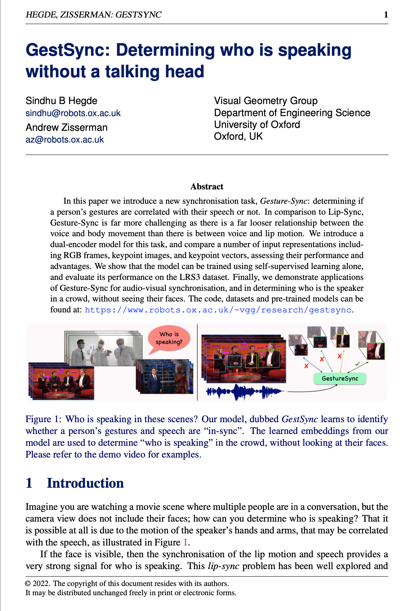

| Can you guess who is speaking in the scenarios below? |
| Despite the limited visibility of faces, particularly the lips, humans can still successfully recognize the speaker by closely observing their body movements. This is exactly the task we are attempting in this work: Gesture-synchronisation, with an aim to determine if the person's gestures and speech are in-sync. |
|
|
|
Abstract
In this paper we introduce a new synchronisation task, Gesture-Sync: determining if a person's gestures are correlated with their speech or not. In comparison to Lip-Sync, Gesture-Sync is far more challenging as there is a far looser relationship between the voice and body movement than there is between voice and lip motion. We introduce a dual-encoder model for this task, and compare a number of input representations including RGB frames, keypoint images, and keypoint vectors, assessing their performance and advantages. We show that the model can be trained using self-supervised learning alone, and evaluate its performance on the LRS3 dataset. Finally, we demonstrate applications of Gesture-Sync for audio-visual synchronisation, and in determining who is the speaker in a crowd, without seeing their faces.
Architecture
We propose a Transformer-based architecture, GestSync for gesture-speech synchronisation. Our model is trained with a contrastive loss to have a high similarity between the visual and speech embeddings when synchronized, and low otherwise.

Results: Synchronisation
Input: Out-of-sync video |
Output: Sync corrected video |
|
|
GT offset = -20 Predicted offset = -20 |
||
|
GT offset = 15 Predicted offset = 15 |
Publication
|  |
Acknowledgements
This research is funded by EPSRC Programme Grant VisualAI EP/T028572/1, and a Royal Society Research Professorship RP \R1 \191132.